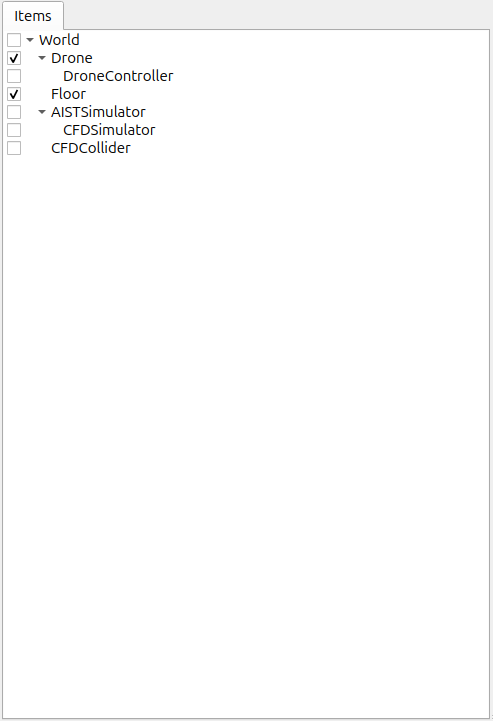
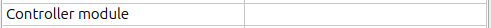

Step 2: Implementing a controller
In Step 1, there was no controller, so we couldn't fly the Drone model into the air. In Step 2, we will be learning how to implement controllers by creating the bare minimum controller needed to maintain the orientation of a model.
Controller format
Generally speaking, there are many different ways in which controllers can be implemented. Typically, this is done by way of formats set by specific robot systems and simulators, or through a form of a robot middleware such as ROS. In this tutorial, we will implement controllers in Choreonoid’s original “Simple Controller” format. The Simple Controller makes use of C++ and Choreonoid’s internal data structure to implement itself. Compared to using middleware such as ROS, it has the advantage that you do not have to learn much and the code is relatively simple. Note that this is Choreonoid’s original format, and therefore is less ubiquitous or versatile than general middlewares such as ROS. Furthermore, it does not include the communication features that middlware such as ROS provides. In fact Choreonoid can be integrated with ROS by using the choreonoid_ros package, and make use of it if necessary.
Implementing the “DroneController1” controller
The SimpleController format implements the controller using a C++ class. Here we’ll implement a simple DroneController1, the purpose of which is to apply the thrusts and anti-torques to the rotor devices. The source code to the controller is seen below.
#include <cnoid/Rotor>
#include <cnoid/SimpleController>
using namespace cnoid;
class DroneController1 : public SimpleController
{
Body* ioBody;
Rotor* rotor[4];
public:
virtual bool initialize(SimpleControllerIO* io) override
{
ioBody = io->body();
rotor[0] = io->body()->findDevice<Rotor>("Rotor_FR");
rotor[1] = io->body()->findDevice<Rotor>("Rotor_FL");
rotor[2] = io->body()->findDevice<Rotor>("Rotor_RL");
rotor[3] = io->body()->findDevice<Rotor>("Rotor_RR");
for(int i = 0; i < 4; ++i) {
io->enableInput(rotor[i]);
}
return true;
}
virtual bool control() override
{
static const double G = 9.80665;
double mass = ioBody->mass();
double gravity = mass * G;
static const double ATD[] = { -1.0, 1.0, -1.0, 1.0 };
double thr[4] = { 0.0 };
thr[0] = gravity / 4.0;
thr[1] = gravity / 4.0;
thr[2] = gravity / 4.0;
thr[3] = gravity / 4.0;
for(int i = 0; i < 4; ++i) {
rotor[i]->thrust() = thr[i];
rotor[i]->torque() = ATD[i] * thr[i];
rotor[i]->notifyStateChange();
}
return true;
}
};
CNOID_IMPLEMENT_SIMPLE_CONTROLLER_FACTORY(DroneController1)
Below, we import this controller as a simulation project and then describe the steps up to running the simulation. Then, we discuss the details of how the controller is specifically implemented and break that down.
Creating a project directory
First, create a directory in which to save the output of the above, which you will be entering into a text file. You could create a directory named “drone” and then save the above source code to a file named DroneController1.cpp. Going forward, other files in the tutorial should be saved in this directory. We refer to this as the project directory. The files we created in Step 1 when learning about Saving a project can also be stored here to put everything in one place.
注釈
If you are unsure of what text editor to use on Ubuntu, for the time being, try using the default text editor, “gedit.” From the Dash, type “gedit” and click the text editor icon that appears. You can also enter “gedit” directly on the command line.
Building the controller
Broadly speaking, there are two ways of building (compiling) the source code written in C++.
Building alongside Choreonoid
Building separately from Choreonoid
If you are building Choreonoid from source, method 1 is easier. In this tutorial, we describe method 1. For details on build methods, see the section on Building the controller . When actually developing your own controller, you will probably use both methods depending on your intended objectives and the environment being used. When using method 1, we have to make Choreonoid’s build system recognize the project directory we just created. There are also two ways of doing this.
Place the corresponding directory below the /ext directory in the Choreonoid source directory
Pass the path to the directory using ADDITIONAL_EXT_DIRECTORIES in the Choreonoid CMake file
If adopting method A, move the “drone” project directory we just created to be below /ext. You could also opt to create the project directory below /ext ahead of time. Either way is fine. If using method B, specify the corresponding directory path using the above setting. If there are multiple directories in question, delimit them with a semicolon. Unless you have reason to do so, we suggest using method A. In this case:
Create the “drone” project directory below the “ext” directory in the Choreonoid source directory.
Save the DroneController1 source code from the previous paragraph as a file named DroneController1.cpp in the “drone” directory.
CMakeLists.txt notation
Next, create CMakeLists.txt, a text file, in the project directory and notate the controller compile settings therein. That being said, the details for this example are quite simple. All you have to do is add the single line below.
add_cnoid_simple_controller(DroneTutorial_DroneController1 DroneController1.cpp)
target_link_libraries(DroneTutorial_DroneController1 CnoidCFDPlugin)
The add_cnoid_simple_controller function we have used here is a function already defined in the CMake file for Choreonoid. You simply need to add the name and source file of the controller you wish to generate to compile the controller. We have prepended the prefix “DroneTutorial” to the controller name. This is not required, but it is done to easily distinguish it from controllers you develop for other projects.
Controller compilation
You can now compile it. We are using the same build method as when we built Choreonoid proper. All you need to do is build Choreonoid again. There is a new CMakeLists.txt file now, so reissue CMake to ensure it detects it properly. For the device in Step 1, the current directory should be the Choreonoid source directory. If this is not the case, use
cd [path to Choreonoid source directory]
to navigate to the source directory. If you are using the source directory as-is as a build directory, run
cmake .
to run CMake again in the current working directory. If your build and source directories are separate, navigate to the build directory and pass the source directory as a parameter to cmake. For example, if you have created a build directory called “build” directly below the source directory, you would do the following
cd build
cmake ..
Next, go to the build directory and issue this command
make
(For details on compiling, please refer to the Choreonoid build section of the Building and Installing from Source (Ubuntu Linux) documentation.) If the A and B conditions described in the section on Building the controller are met, the above CMakeLists.txt will be output, and its content is executed. If the compile process succeeds, you will find a file named
DroneTutorial_DroneController1.so
under lib/choreonoid-x.x/simplecontroller (where x.x is the Choreonoid version number). This is the base file for the controller. As the extension indicates, this is a shared library file that defines the controller. Going forward, we describe the directory in which the controller was generated as the controller directory. If you get a compile error, refer to the error message and adjust the source code and/or CMakeLists.txt.
Controller item creation
Now we import the SimpleController that we created into Choreonoid as a SimpleController item. First begin by generating the SimpleController item. From the Main Menu, select File, new, then SimpleController. The item can take any name. It is best to ensure consistency with the controller by naming it something like DroneController1. The resulting item will be positioned, as seen below, as a sub-item of the Drone item, which is what we intend to control with it.
{kind=link}

This positioning indicates that the control target of the controller is the Drone. Achieving this can be done by first selecting the Drone item and then generating the controller item, or by dragging into position after generation.
Setting the controller body
Next, we set the controller we just created onto the SimpleController item. This is done by way of the controller module property that the SimpleController item possesses. Begin by selecting DroneController1 on the Item Tree. The item’s properties list will appear on the Item Properties View. From there, look for the Controller Module property. Double-clicking on the property value field (by default, it will be empty) lets you input the name of the module file. Using the file input dialog that appears is a fast and convenient way to do so. When giving input to the controller module, as shown in the figure below, there is an icon at the right which is used to enter a value.
{kind=link}

Clicking this icon will display a file selection dialog. Ordinarily, this dialog points to the default directory used to store the SimpleController. You should find the DroneTutorial_DroneController1.so that we just created. Select it. With this, the controller is now set on the SimpleController item. Now we can imbue the controller with functionality. Take a moment to save your work on the project thus far. Save the filename as step2.cnoid and save it into the project directory.
Launching a simulation
Now that you have completed the above, try running the simulation. While the drone flies in the air. This is because the DroneController1 controller is applying the thrusts and anti-torques to the rotor devices. If you have trouble, look at the Message View for logs. If there are issues with the controller settings or operation, the Message View will output debug messages upon starting the simulation.
How this implementation works
The SimpleController Class
The SimpleController is designed to inherit the SimpleController class defined in Choreonoid. Begin by writing
#include <cnoid/SimpleController>
to include the header defined for this class. The header files provided by Choreonoid are stored in the “cnoid” subdirectory of the source directory, and you can specify this as a path from the cnoid directory. A file extension is not required. All of the classes defined in Choreonoid belong to the “cnoid” namespace. Here, we use
using namespace cnoid;
to abbreviate the namespace. The controller class is defined by using
class DroneController1 : public SimpleController
{
...
};
You can see how the DroneController1 is defined to inherit the SimpleController attributes. The SimpleController class defines several functions as virtual functions; overriding these functions in the succeeding item lets you implement controller-internal processing. Normally, the below two functions are overridden.
virtual bool initialize(SimpleControllerIO* io)
virtual bool control()
Including Headers
- #include <cnoid/Rotor>
Includes the header for controlling the Rotor devices that generate thrust for the drone.
- #include <cnoid/SimpleController>
Includes the base class header required to create a "SimpleController" in Choreonoid.
Class Member Variable Declarations
- Body* ioBody;
Declares a pointer to access the robot's body information, such as total mass and link structure.
- Rotor* rotor[4];
An array of pointers used to store and manipulate the four rotor devices.
Implementing the initialize function
- ioBody = io->body();
Retrieves the drone's body object being controlled and stores it in the variable.
- rotor[0] = io->body()->findDevice<Rotor>("Rotor_FR");
Locates the device named "Rotor_FR" (Front Right) in the model and assigns it to the array.
- rotor[1] = io->body()->findDevice<Rotor>("Rotor_FL");
Locates the device named "Rotor_FL" (Front Left) in the model and assigns it to the array.
- rotor[2] = io->body()->findDevice<Rotor>("Rotor_RL");
Locates the device named "Rotor_RL" (Rear Left) in the model and assigns it to the array.
- rotor[3] = io->body()->findDevice<Rotor>("Rotor_RR");
Locates the device named "Rotor_RR" (Rear Right) in the model and assigns it to the array.
- io->enableInput(rotor[i]);
Enables the controller to read the current state (such as RPM) of each rotor from the simulator.
Implementing the control function
- static const double G = 9.80665;
Defines the constant for gravitational acceleration.
- double mass = ioBody->mass();
Retrieves the total mass (kg) of the drone's body.
- double gravity = mass * G;
Calculates the total gravitational force (Newtons) acting on the drone.
- static const double ATD[] = { -1.0, 1.0, -1.0, 1.0 };
Defines the Anti-Torque Direction coefficients to counteract the rotational force caused by the propellers.
- double thr[4] = { 0.0 };
Prepares an array to store the calculated thrust values for each rotor.
- thr[0] = gravity / 4.0; to thr[3] = gravity / 4.0;
Distributes the total gravitational force equally across the four rotors (the basic condition for hovering).
- rotor[i]->thrust() = thr[i];
Sets the calculated thrust as the output value for the actual rotor device.
- rotor[i]->torque() = ATD[i] * thr[i];
Simulates the "reaction torque" (the force trying to rotate the body) based on the thrust produced.
- rotor[i]->notifyStateChange();
Sends the updated thrust and torque values to the simulator's physics engine.
Factory function definitions
Once you define the SimpleController class, you must define the factory function, used to generate the object, per the prescribed method. This is needed so that the SimpleController item will read in the shared controller libraries at runtime and generate the controller object from there. This is achieved by using a macro
CNOID_IMPLEMENT_SIMPLE_CONTROLLER_FACTORY(DroneController1)
Give it the controller class name as an argument, as above.